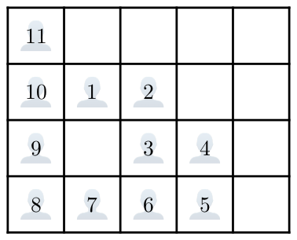
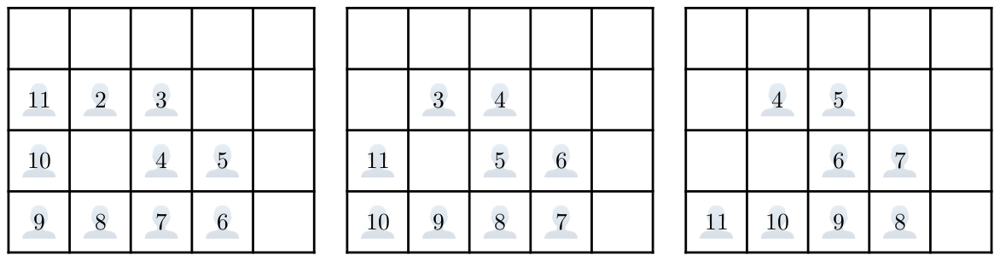

Boarding Queue
You are on your way to compete in The 2025 ICPC Asia Pacific Championship. Unfortunately, you are in the process of the worst part of flying: waiting in the boarding queue.
You are in a queue with \(n\) travelers, numbered from \(1\) to \(n\) ordered from the front of the queue to the back of the queue.
The boarding area is represented by a grid of \(r\) rows and \(c\) columns, where the rows are numbered from \(1\) to \(r\) (top to bottom) and the columns are numbered from \(1\) to \(c\) (left to right). Each traveler occupies exactly one distinct cell in the grid. Two travelers are adjacent if the cells they are in share an edge. Traveler \(t\) and traveler \(t - 1\) are guaranteed to be adjacent, for any \(2 \le t \le n\).
For example, Figure L.1 illustrates a possible location of the travelers. In this example, traveler \(1\) is adjacent to travelers \(2\) and \(10\) but not adjacent to traveler \(11\).

At each boarding step, all of the following happen simultaneously:
- The frontmost traveler in the queue, say traveler \(t\), boards the aircraft and leaves the boarding area.
- For each \(t'\) (\(t + 1 \le t' \le n\)), traveler \(t'\) takes the cell that traveler \(t' - 1\) was occupying immediately before the step.
For example, Figure L.2 illustrates the locations of the travelers after the first three boarding steps from the initial location above.

You are traveler \(p\) (that is, there are \(p - 1\) travelers in front of you). You know that your team coach is somewhere in the queue, but you do not know where. Assuming your team coach is equally likely to be any of travelers \(1\) to \(n\) (except \(p\)), you want to calculate the probability that you will be adjacent to your team coach at some point before you board the aircraft. Formally, you will be adjacent to traveler \(q\) at some point before you board the aircraft if there exists an integer \(s\) (\(0 \le s \lt p\)) such that traveler \(p\) and traveler \(q\) are adjacent after \(s\) boarding steps.
Input
The first line of input contains four integers \(r\), \(c\), \(n\), and \(p\) (\(1 \le r, c \le 1000; 2 \le n \le r \times c; 1 \le p \le n\)). Each of the next \(r\) lines contains \(c\) integers. The \(j\)-th integer in the \(i\)-th line denotes \(G_{i,j}\) (\(0 \le G_{i,j} \le n\)), where a non-zero value of \(G_{i,j}\) means that traveler \(G_{i,j}\) initially occupies the cell at row \(i\) and column \(j\) of the boarding area, while a zero value of \(G_{i,j}\) means that no traveler occupies the cell. Across all pairs \((i, j)\), each of the integers \(1\) to \(n\) appears exactly once in \(G_{i,j}\). The input guarantees that traveler \(t\) and traveler \(t - 1\) are adjacent, for all \(2 \le t \le n\).
Output
Output a fraction in the \(x/y\) format indicating the probability that you will be adjacent to your team coach at some point before you board the aircraft. The value of \(y\) must be equal to \(n - 1\). Note that there must not be spaces between the integers and the \(/\) delimiter.
4 5 11 2 11 0 0 0 0 10 1 2 0 0 9 0 3 4 0 8 7 6 5 0
3/10
Explanation for the sample input/output #1
This sample corresponds to the example given in the problem description above. You will be adjacent to your team coach at some point before you board the aircraft if your team coach is either traveler \(1\), \(3\), or \(11\).
1 7 7 6 1 2 3 4 5 6 7
2/6
Explanation for the sample input/output #2
You will be adjacent to your team coach at some point before you board the aircraft if your team coach is either traveler \(5\) or \(7\). Note that the output 1/3 is not accepted.